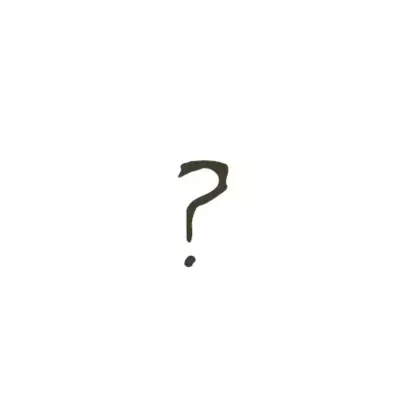

Forgotten Valley
Sorry, pardner! Looks like the page you
was tryin' to reach ain’t 'round these parts.
Sorry, pardner! Looks like the page
you was tryin' to reach ain’t 'round
these parts.
Back to Homepage
This 404 error page was inspired by Rockstar Games' "Red Dead Redemption" series